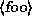

These conventions should be obvious, but we'll include them here for the pedantic.
ls -lwhere  would ``stand for'' a filename, such as /bin/cp.
$ ls --l /bin/cp
-rwxr-xr-x 1 root wheel 12104 Sep 25 15:53 /bin/cp
Also used for code examples, whether it is C code, a shell script, or something else, and to display general files, such as configuration files. When necessary for clarity's sake, these examples or figures will be enclosed in thin boxes.
Press to continue.